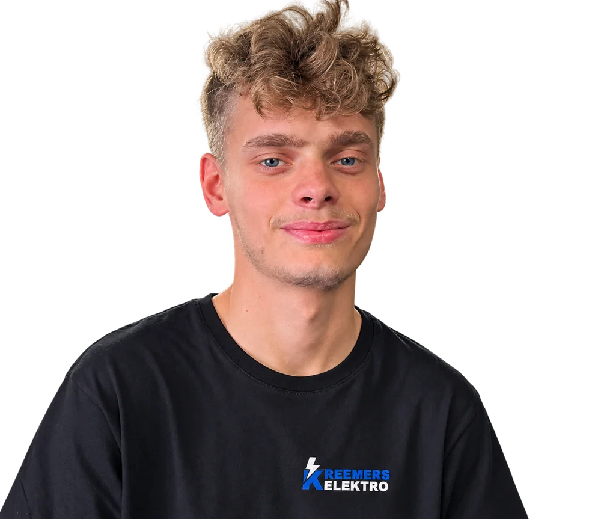

Over Max / Kreemers Elektro
Aangenaam.
Ik ben Max.
Elektricien uit Kermt, bij Hasselt.
Degene die je spreekt, is ook degene die je installatie plaatst.
Ik ben Max Kreemers. Ik leg elektriciteit aan voor nieuwbouw en renovatie, plaats verlichting en werk met domotica. Heb je een vraag over je project? Dan stel je die rechtstreeks aan mij.
Bespreek je plannen met MaxKreemers Elektro.

Max KreemersHoe ik in het vak terechtkwam
Het begon met lampen
uit elkaar halen.
Als kind wilde ik weten hoe afstandsbedieningen en lampen werkten. Dus haalde ik ze uit elkaar. Die interesse bracht me naar de opleiding Elektrische installaties aan de Sint-Martinusscholen in Herk-de-Stad.
Vandaag sluit ik zelf installaties aan. Ik hou van het denkwerk achter een installatie en van het moment waarop de verlichting voor het eerst aangaat.
Van kennismaking tot oplevering
Dit bespreken we voor en tijdens je project.
- 01
Kennismaken
Je vertelt wat je gaat bouwen of verbouwen en hoe je de ruimtes wilt gebruiken.
- 02
Een duidelijk voorstel
Ik werk je vraag uit in een offerte. Die bespreken we voordat ik begin.
- 03
Aan het werk
Ik voer de voorbereidende werken uit, leg de leidingen en sluit de installatie aan.
- 04
Samen afronden
We lopen de installatie samen na. Ik laat je zien hoe je de verlichting en bediening gebruikt.
Nieuwbouw, renovatie of domotica